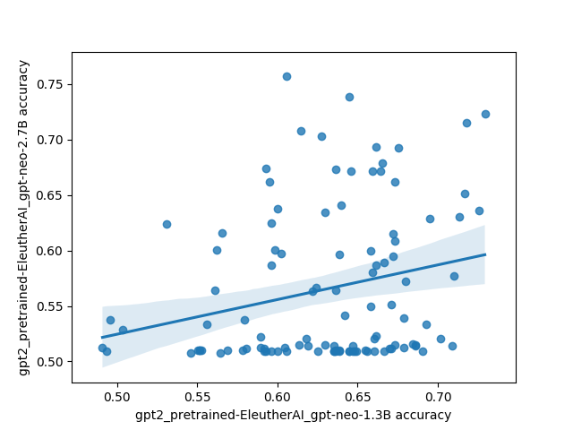
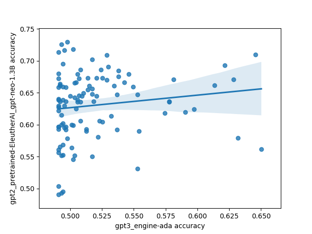
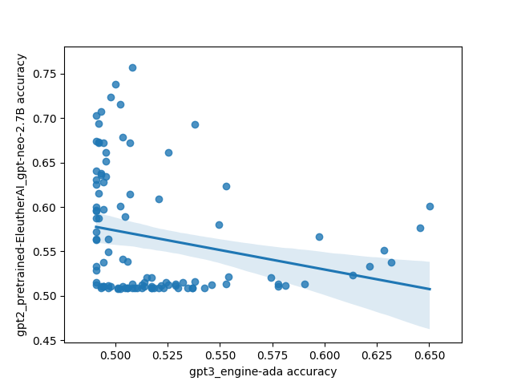
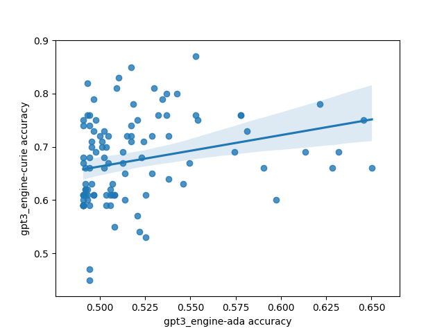
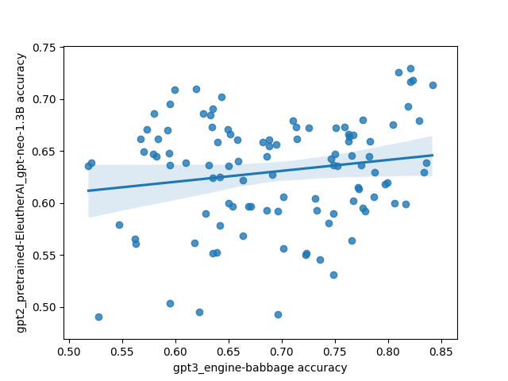
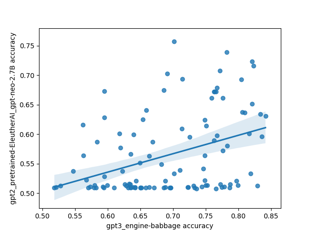
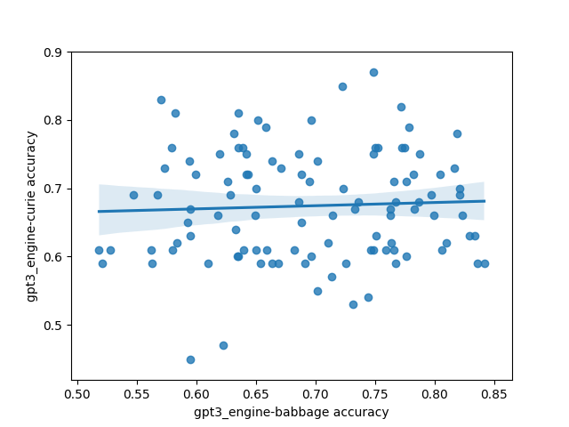
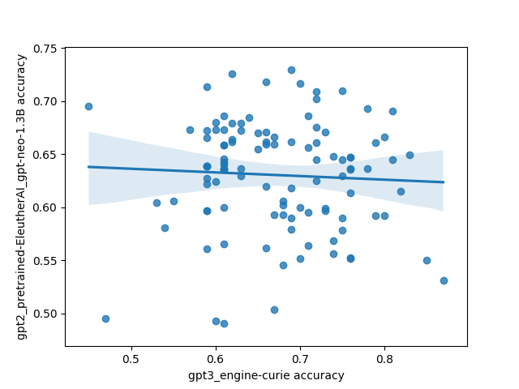
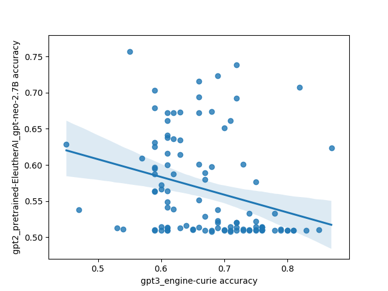

Adam Shimi suggested the idea of trying different fewshot prompts on GPT-3, and hopefully observing something that evidenced larger models being able to handle a wider variety of prompting. He also wrote up a bunch of prompts to try on SST.
Unfortunately, the results were kinda mixed: the GPT-2 models all did absolutely terrible and their results were basically useless; the performance wasn't monotonic with model size (1.3B did better than 2.7B, and babbage did better than curie). Also, the variance increased with performance in general.
| Mean Accuracy | Standard Deviation in Accuracy | |
|---|---|---|
| gpt3-ada | 51.9 | 0.0368 |
| gpt3-babbage | 69.4 | 0.0840 |
| gpt3-curie | 67.4 | 0.0807 |
| neo-1.3B | 63.0 | 0.0522 |
| neo-2.7B | 56.5 | 0.0684 |
However, there was one interesting and unexpected result: there's basically no correlation between different models on which prompts do the best. This is highly unexpected because I'd expect a priori that models trained on the same/similar data should have similar preferences for what kinds of prompts work well, and that surely some prompts must be better than other prompts in general.
Here's what that looks like plotted out. Each point in these plots is one prompt, and the axes are different models. The values are SST accuracy:









The code for the experiment is here.